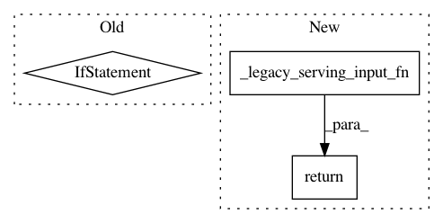

51a0c5fbe8e236cdb7e58afce66d7639d8fe9a45,tensorflow_transform/saved/input_fn_maker.py,,build_default_transforming_serving_input_fn,#Any#Any#Any#Any#Any#,249
Before Change
if raw_label_keys is None:
raise ValueError("raw_label_keys must be specified.")
if raw_feature_keys is None:
raw_feature_keys = list(
set(six.iterkeys(raw_metadata.schema.column_schemas))
- set(raw_label_keys))
def default_transforming_serving_input_fn():
Serving input_fn that applies transforms to raw data in Tensors.
raw_serving_features = {
After Change
exclude_raw_keys=raw_label_keys,
include_raw_keys=raw_feature_keys,
convert_scalars_to_vectors=convert_scalars_to_vectors)
return _legacy_serving_input_fn(receiver_fn)
def build_default_transforming_serving_input_receiver_fn(
raw_metadata,
In pattern: SUPERPATTERN
Frequency: 3
Non-data size: 3
Instances
Project Name: tensorflow/transform
Commit Name: 51a0c5fbe8e236cdb7e58afce66d7639d8fe9a45
Time: 2017-10-20
Author: tf-transform-dev@google.com
File Name: tensorflow_transform/saved/input_fn_maker.py
Class Name:
Method Name: build_default_transforming_serving_input_fn
Project Name: tensorflow/transform
Commit Name: 51a0c5fbe8e236cdb7e58afce66d7639d8fe9a45
Time: 2017-10-20
Author: tf-transform-dev@google.com
File Name: tensorflow_transform/saved/input_fn_maker.py
Class Name:
Method Name: build_parsing_transforming_serving_input_fn
Project Name: tensorflow/transform
Commit Name: 51a0c5fbe8e236cdb7e58afce66d7639d8fe9a45
Time: 2017-10-20
Author: tf-transform-dev@google.com
File Name: tensorflow_transform/saved/input_fn_maker.py
Class Name:
Method Name: build_json_example_transforming_serving_input_fn